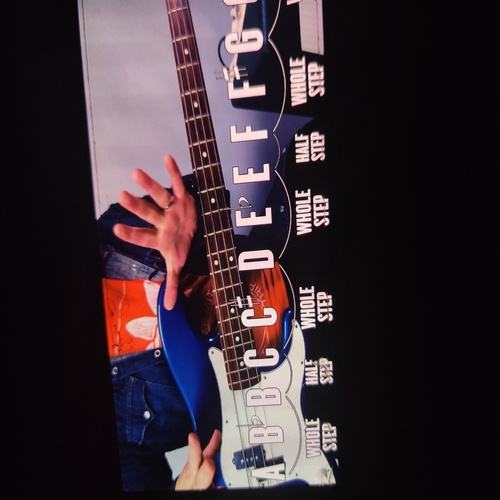
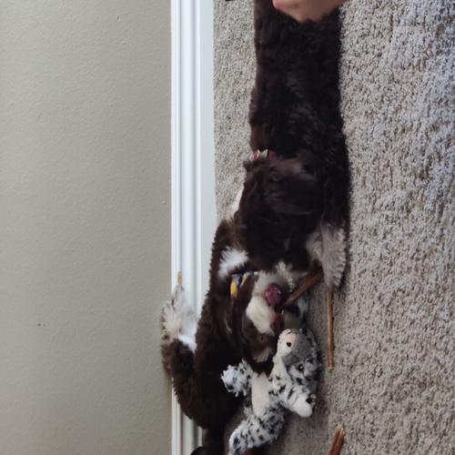
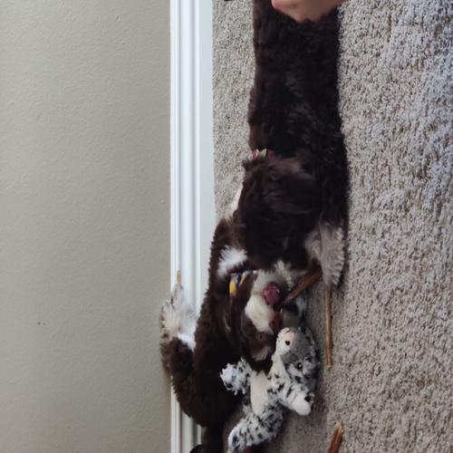

Emanuel Boca
The majority of my experience falls into two brackets; personal experience or the experience I have gained from education and courses I have been involved with throughout my life.
Each of these areas have helped be grow and develop the skills that are necessary to attack any challenge I am faced with head on.
The personal experience I have acquired through different portions of my life revolve around my father and the business he owns. He is the sole owner of a contractor business where he assists in any remodeling features in or out of a house.
Not only have I gained years of hands on experience in the field, I assisted with keeping track of all the locations my father and I had to go to and mapped out an organized plan to discover which jobs are best to tackle first due to constraints such as
time, money, or requiring other professionals to assist. Through the creation of these organized plans I gained knowledge in organization and more passive skills such as responsibility, communication, and trustworthiness from higher ups.
Combined with personal experience, the education I have recieved this far into college had really enhanced my ability to attack jobs in a creative manner that puts a unique twist on what others may offer. For example, in one of my business courses I was required to work
together with a group of peers and establish a feature or service that could be added to an existing company that would further improve their business whether it was getting more consumers, creating more efficiency, lowering expenses, or even gaining
more profit. Through this education and the courses down the line in my future, I expect to be recieving large amounts of experience that I can use in my future.
One of my strenghts is that I am easily able to swap software for jobs. In my previous jobs, I was focusing on other software. Essentially, positive user experience has always been and will continue to be at the forefront of my efforts. The software I worked with before has changed many
times due to the constantly shifting work environment. however, Thanks to this, I believe I will learn to operate any software placed in front of me. I am very proactive and learns things easily and quickly when it comes to technology.
Another strenght includes beign a great problem solver. When a problem arises, I stay calm and focused. In other words, I brainstorm many solutions, and then set out to test them. If one solution doesn’t work, I don’t get discouraged. Instead, I move on to the next solution.
One of my weaknesses involves sometimes lacking confidence in my ideas. I’ve missed opportunities to speak up about good ideas or solutions to problems. However, Through the numerous business courses I am required to take, there will be a plenty of opportunities to overcome
this weakness and allow me to feel more comfortable in those settings where I may have originally lacked confidence in.
Experience
Contractor helper
• Learned hands on skills in construction
• Developed communication skills with customers
• Helped create media presence to gain new customers
Dog sitter/walker
• Helped gain responsibility and deadlines
• Transitioned from thinking about single projects to multi-tasking
Tutor
• Ran sessions to help students struggling in math/guitar
• Reviewed students graded work
• Helped promote student skills through the development of teaching material educational and recreational
• Learned responsibility and patience from working with younger students
Education
UC Riverside
Portfolio



